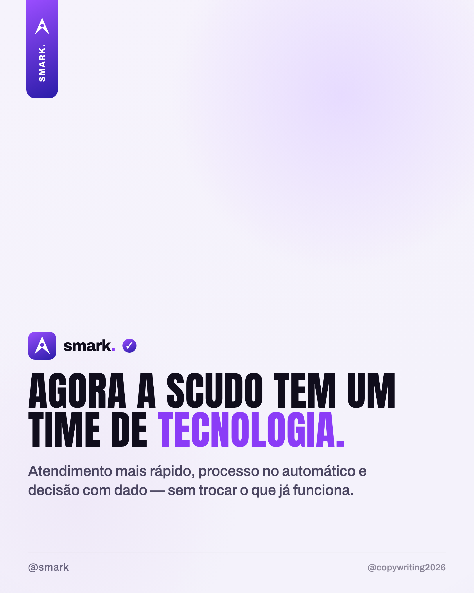

Carrossel gerado pelo nosso compositor (etiqueta, chip, rodapé, headline com acento) — tom V4, menos formal. Foto da Scudo na capa + identidade smark.

1 · Capa (foto Scudo) — "DEU MATCH: smark + Scudo." · anúncio descontraído da parceria.
2 · O serviço — "Agora a Scudo tem um time de tecnologia." · o que muda (atendimento, processo, dados/IA).
3 · CTA — "Quer a smark na sua operação?" · diagnóstico pra outras empresas.
Publica no @smark, marca @scudoseguros, reposta no story da Scudo.